화공기사(구) (2020-08-22 기출문제)
1과목: 화공열역학
1. 이상기체의 열용량에 대한 설명으로 옳은 것은?
- 이상기체의 열용량은 상태함수이다.
- 이상기체의 열용량은 온도에 무관하다.
- 이상기체의 열용량은 압력에 무관하다.
- 모든 이상기체는 같은 값의 열용량을 갖는다.
(정답률: 49%)

2. 일정온도 80℃에서 라울(Raoilt)의 법칙에 근사적으로 일치하는 아세톤과 니트로메탄 이성분계가 기액평형을 이루고 있다. 아세톤의 액상 몰분율이 0.4 일 때 아세톤의 기체상 몰분율은? (단, 80℃에서 순수 아세톤과 니트로메탄의 증기압은 각각 195.75, 50.32 kPa 이다.)
- 0.85
- 0.72
- 0.28
- 0.15
(정답률: 64%)
3. 372℃, 100atm에서의 수증기부피(L/mol)는? (단, 수증기는 이상기체라 가정한다.)
- 0.229
- 0.329
- 0.429
- 0.529
(정답률: 69%)
4. 이상기체에 대한 설명 중 틀린 것은? (단, U : 내부에너지, R : 기체상수, CP : 정압열용량, CV : 정적열용량이다.)
- 이상기체의 등온가역 과정에서는 PV 값은 일정하다.
- 이상기체의 경우 CP - CV = R 이다.
- 이상기체의 단열가역 과정에서는 TV 값은 일정하다.
- 이상기체의 경우
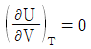
이다.
(정답률: 64%)
5. 360℃ 고온 열저장고와 120℃ 저온 열저장고 사이에서 작동하는 열기관이 60kW의 동력을 생산한다면 고온 열저장고로부터 열기관으로 유입되는 열량(QH; kW)은?
- 20
- 85.7
- 90
- 158.3
(정답률: 59%)
6. Joule-Thomson coefficient를 옳게 나타낸 것은? (단, CP : 정압열용량, V : 부피, P : 압력, T : 온도를 의미한다.)
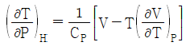
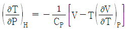
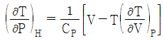
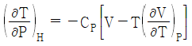
(정답률: 43%)
7. “에너지보존의 법칙”으로 불리는 것은?
- 열역학 제0법칙
- 열역학 제1법칙
- 열역학 제2법칙
- 열역학 제3법칙
(정답률: 74%)
8. 다음 중 상태함수가 아닌 것은?
- 일
- 몰 엔탈피
- 몰 엔트로피
- 몰 내부에너지
(정답률: 73%)
9. 다음 그래프가 나타내는 과정으로 옳은 것은? (단, T는 절대온도, S는 엔트로피이다.)
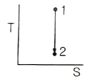
- 등엔트로피과정(Isentropic process)
- 등온과정(Isothermal process)
- 정용과정(Isometric process)
- 등압과정(Isobaric process)
(정답률: 73%)
10. CO2 + H2 → CO + H2O 반응이 760℃, 1기압에서 일어난다. 반응한 CO2의 몰분율을 x라 하면 이때 평형상수 KP를 구하는 식으로 옳은 것은? (단, 초기에 CO2와 H2는 각각 1몰씩이며, 초기의 CO와 H2O는 없다고 가정한다.)
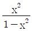
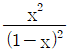
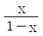
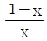
(정답률: 70%)
11. 어떤 가역 열기관이 500℃에서 1000cal의 열을 받아 일을 생산하고 나머지의 열을 100℃의 열소(heat sink)에 버린다. 열소의 엔트로피 변화(cal/K)는?
- 1000
- 417
- 41.7
- 1.29
(정답률: 52%)
12. 화학반응의 평형상수 K의 정의로부터 다음의 관계식을 얻을 수 있을 때, 이 관계식에 대한 설명 중 틀린 것은?
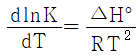
- 온도에 대한 평형상수의 변화를 나타낸다.
- 발열반응에서는 온도가 증가하면 평형상수가 감소함을 보여준다.
- 주어진 온도구간에서 △H° 가 일정하면 lnK를 T의 함수로 표시했을 때 직선의 기울기가
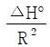
이다. - 화학반응의 △H°를 구하는데 사용할 수 있다.
(정답률: 68%)
13. 수증기와 질소의 혼합기체가 물과 평형에 있을 때 자유도는?
- 0
- 1
- 2
- 3
(정답률: 60%)
14. 카르노 사이클(Carnot cycle)에 대한 설명으로 틀린 것은?
- 가역 사이클이다.
- 효율은 엔진이 사용하는 작동물질에 무관하다.
- 효율은 두 열원의 온도에 의하여 결정된다.
- 비가역 열기관의 열효율은 예외적으로 가역기관의 열효율보다 클 수 있다.
(정답률: 66%)
15. 화학반응에서 정방향으로 반응이 계속 일어나는 경우는? (단, △G : 깁스자유에너지변화량, K : 평형상수이다.)
- △G = K
- △G = 0
- △G ＞ 0
- △G ＜ 0
(정답률: 67%)
16. 반데르 발스(Van der Waals)의 상태식에 따르는 n mol의 기체가 초기 용적(v1)에서 나중 용적(v2)으로 정온가역적으로 팽창할 때 행한 일의 크기를 나타낸 식으로 옳은 것은?
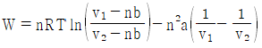
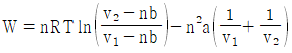
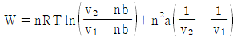
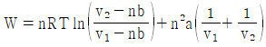
(정답률: 49%)
17. 비압축성 유체의 성질이 아닌 것은?
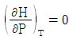
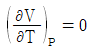
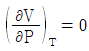
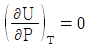
(정답률: 39%)
18. 오토(Otto) 사이클의 효율(η)을 표시하는 식으로 옳은 것은? (단, γ : 비열비, rv : 압축비, rf : 팽창비이다.)
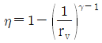
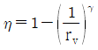
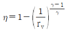
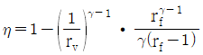
(정답률: 60%)
19. 열전도가 없는 수평 파이프 속에 이상기체가 정상상태로 흐른다. 이상기체의 유속이 점점 증가할 때 이상기체의 온도변화로 옳은 것은?
- 높아진다.
- 낮아진다.
- 일정하다.
- 높아졌다 낮아짐을 반복한다.
(정답률: 44%)
20. 2.0 atm의 압력과 25℃의 온도에 있는 2.0몰의 수소가 동일조건에 있는 3.0몰의 암모니아와 이상적으로 혼합될 때 깁스자유에너지변화량(△G; kJ)은?
- -8.34
- -5.58
- 8.34
- 5.58
(정답률: 31%)
2과목: 단위조작 및 화학공업양론
21. 30℃, 760mmHg에서 공기의 수증기압이 25 mmHg이고, 같은 온도에서 포화 수증기압이 0.0433 kgf/cm2 일 때, 상대습도(%)는?
- 48.6
- 52.7
- 58.4
- 78.5
(정답률: 48%)
22. 표준상태에서 일산화탄소의 완전연소 반응열(kcal/gmol)은? (단, 일산화탄소와 이산화탄소의 표준생성엔탈피는 아래와 같다.)
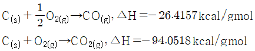
- -67.6361
- 63.6361
- 94.⑤18
- -94.⑤18
(정답률: 58%)
23. 25℃에서 10L의 이상기체를 1.5L까지 정온 압축시켰을 때 주위로부터 2250 cal의 일을 받았다면 압축한 이상기체의 몰수(mol)는?
- 0.5
- 1
- 2
- 3
(정답률: 59%)
24. 대응상태원리에 대한 설명 중 틀린 것은?
- 물질의 극성, 비극성 구조의 효과를 고려하지 않은 원리이다.
- 환산상태가 동일해도 압력이 다르면 두 물질의 압축계수는 다르다.
- 단순구조의 한정된 물질에 적용 가능한 원리이다.
- 환산상태가 동일하면 압력이 달라도 두 물질의 압축계수는 유사하다.
(정답률: 40%)
25. 질소 280kg과 수소 64kg이 반응기에서 500℃, 300 atm 조건으로 반응되어 평형점에서 전체 몰수를 측정하였더니 26 kmol 이였다. 반응기에서 생성된 암모니아(kg)는?
- 272
- 160
- 136
- 80
(정답률: 51%)
26. 기화잠열을 추산하는 방법에 대한 설명 중 틀린 것은?
- 포화압력의 대수값과 온도역수의 도시로부터 잠열을 추산하는 공식은 Clausius-Clapeyron equation 이다.
- 기화잠열과 임계온도가 일정 비율을 가지고 있다고 추론하는 방법은 Trouton's rule 이다.
- 환산온도와 기화열로부터 잠열을 구하는 공식은 Watson;s equation 이다.
- 정상비등온도와 임계온도·압력을 이용하여 잠열을 구하는 공식은 Roedel's equation 이다.
(정답률: 26%)
27. 원유의 비중을 나타내는 지표로 사용되는 것은?
- Baume
- Twaddell
- API
- Sour
(정답률: 61%)
28. CO(g)를 활용하기 위해 162g의 C, 22g의 H2의 혼합연료를 연소하여 CO2 11.1 vol%, CO 2.4 vol%, O2 4.1 vol%, N2 82.4 vol% 조성의 연소가스를 얻었다. CO의 완전연소를 고려하지 않은 공기의 과잉공급률(%)는? (단, 공기의 조성은 O2 21 vol%, N2 79 vol% 이다.)(오류 신고가 접수된 문제입니다. 반드시 정답과 해설을 확인하시기 바랍니다.)
- 15.3
- 17.3
- 20.3
- 23.0
(정답률: 27%)
29. 상, 상평형 및 임계온도에 대한 다음 설명 중 틀린 것은?
- 순성분의 기액평형 압력은 그때의 증기압과 같다.
- 3중점에 있는 계의 자유도는 0 이다.
- 평형온도보다 높은 온도의 증기는 과열증기이다.
- 임계온도는 그 성분의 기상과 액상이 공존할 수 있는 최저온도이다.
(정답률: 54%)
30. 20℃, 740 mmHg에서 N2 79 mol%, O2 21 mol% 공기의 밀도(g/L)는?
- 1.17
- 1.23
- 1.35
- 1.42
(정답률: 60%)
31. 벤젠과 톨루엔의 2성분계 정류조직의 자유도(degrees of freedom)는?
- 0
- 1
- 2
- 3
(정답률: 50%)
32. 완전 흑체에서 복사 에너지에 관한 설명으로 옳은 것은?
- 복사면적에 반비례하고 절대온도에 비례
- 복사면적에 비례하고 절대온도에 비례
- 복사면적에 반비례하고 절대온도의 4승에 비례
- 복사면적에 비례하고 절대온도의 4승에 비례
(정답률: 50%)
33. 중력가속도가 지구와 다른 행성에서 물이 흐르는 오리피스의 압력차를 측정하기 위해 U자관 수은압력계(manometer)를 사용하였더니 압력계의 읽음이 10cm 이고 이 때의 압력차가 0.⑤ kgf/cm2 였다. 같은 오리피스에 기름을 흘려보내고 압력차를 측정하니 압력계의 읽음이 15cm라고 할 때 오리피스에서의 압력차(kgf/cm2)는? (단, 액체의 밀도는 지구와 동일하며, 수은과 기름의 비중은 각각 13.5, 0.8 이다.)
- 0.0750
- 0.0762
- 0.0938
- 0.1000
(정답률: 37%)
34. 1 atm, 건구온도 65℃, 습구온도 32℃, 습윤공기의 절대습도(
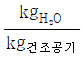
)는? (단, 습구온도 32℃의 상대습도 : 0.031, 기화잠열 : 580 kcal/kg, 습구계수 : 0.227 kg·kcal/℃ 이다.)- 0.012
- 0.018
- 0.024
- 0.030
(정답률: 26%)
35. 막 분리 공정 중 역삼투법에서 물과 염류의 수송 메카니즘에 대한 설명으로 가장 거리가 먼 것은?
- 물과 용질은 용액 확산 메커니즘에 의해 별도로 막을 통해 확산된다.
- 치밀층의 저압쪽에서 1atm 일 때 순수가 생성된다면 활동도는 사실상 1 이다.
- 물의 플럭스 및 선택도는 압력차에 의존하지 않으나 염류의 플럭스는 압력차에 따라 크레 증가한다.
- 물 수송의 구동력은 활동도 차이이며, 이는 압력차에서 공급물과 생성물의 삼투압 차이를 뺀 값에 비례한다.
(정답률: 48%)
36. 비중 1.2, 운동점도 0.254 St인 어떤 유체가 안지름이 1 inch관을 0.25 m/s 의 속도로 흐를 때, Reynolds 수는?
- 2.5
- 98
- 250
- 300
(정답률: 34%)
37. 성분 A, B가 각각 50 mol%인 혼합물을 flash 증류하여 feed의 50%를 유출시켰을 때 관출물의 A조성(XW.A)은? (단, 혼합물의 비휘발도(αAB)는 2 이다.)
- XW.A = 0.31
- XW.A = 0.41
- XW.A = 0.59
- XW.A = 0.85
(정답률: 23%)
38. 열교환기에 사용되는 전열튜브(tube)의 두께를 Birmingham Wire Gauge(BWG)로 표시하는데 다음 중 튜브의 두께가 가장 두꺼운 것은?
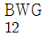
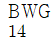
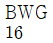
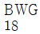
(정답률: 54%)
39. 다음 중 기체수송장치가 아닌 것은?
- 선풍기(fan)
- 회전펌프(rotary pump)
- 송풍기(blower)
- 압축기(compressor)
(정답률: 44%)
40. 추출조작에 이용하는 용매의 성질로서 옳지 않은 것은?
- 선택도가 클 것
- 값이 저렴하고 환경 친화적일 것
- 화학 결합력이 클 것
- 회수가 용이 할 것
(정답률: 58%)
3과목: 공정제어
41. PID 제어기에서 미분동작에 대한 설명으로 옳은 것은?
- 제어에러의 변화율에 반비례하여 동작을 내보낸다.
- 미분동작이 너무 작으면 측정잡음에 민감하게 된다.
- 오프셋을 제거해 준다.
- 느린 동특성을 가지고 잡음이 적은 공정의 제어에 적합하다.
(정답률: 43%)
42.
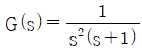
인 계의 unit impulse 응답은?- t – 1 + e-t
- t + 1 + e-t
- t – 1 – e-t
- t + 1 – e-t
(정답률: 47%)
43. 그림과 같은 음의 피드백(negative feedback)에 대한 설명으로 틀린 것은? (단, 비례상수 K는 상수이다.)
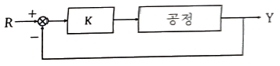
- 불안정한 공정을 안정화 시킬 수 있다.
- 안정한 공정을 불안정하게 만들 수 있다.
- 설정치(R) 변화에 대해 offset 이 발생한다.
- K값에 상관없이 R값 변화에 따른 응답(Y)에 진동이 발생하지 않는다.
(정답률: 37%)
44. 다음 블록선도로부터 서보 문제(Servo problem)에 대한 총괄전달함수 C/R는?
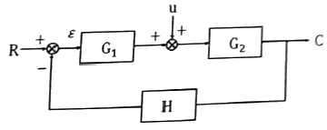
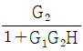
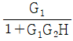
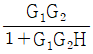
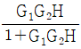
(정답률: 59%)
45. Routh-Hurwitz 안전성 판정이 가장 정확하게 적용되는 공정은? (단, 불감시간은 dead time을 뜻한다.)
- 선형이고 불감시간이 있는 공정
- 선형이고 불감시간이 없는 공정
- 비선형이고 불감시간이 있는 공정
- 비선형이고 불감시간이 없는 공정
(정답률: 50%)
46. Laplace 변환에 대한 설명 중 틀린 것은?
- 모든 시간의 함수는 해당 Laplace 변환을 갖는다.
- Laplace 변환을 통해 함수의 주파수 영역에서의 특성을 알 수 있다.
- 상미분방정식을 Laplace 변환하면 대수방정식으로 바뀐다.
- Laplace 변환은 선형 변환이다.
(정답률: 41%)
47. 비례적분(PI)제어계에 단위계단 변화의 오차가 인가되었을 때 비례이득(Kc) 또는 적분시간(τI)을 응답으로부터 구하는 방법이 타당한 것은?
- 절편으로부터 적분시간을 구한다.
- 절편으로부터 비례이득을 구한다.
- 적분시간과 무관하게 기울기에서 비례이득을 구한다.
- 적분시간은 구할 수 없다.
(정답률: 44%)
48. Amplitude ratio가 항상 1인 계의 전달함수는?
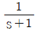
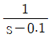
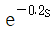
- s+1
(정답률: 45%)
49.
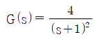
인 공정에 피드백 제어계(unit feedback system)를 구성할 때, 폐회로(closed-loop) 전체의 전달함수가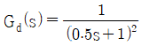
이 되게 하는 제어기는?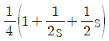
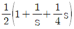
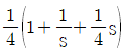
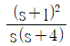
(정답률: 30%)
50. 열교환기에서 유출물의 온도를 제어하려고 한다. 열교환기는 공정이득 1, 시간상수 10을 갖는 1차계 공정의 특성을 나타내는 것으로 파악되었다. 온도 감지기는 시간상수 1을 갖는 1차계 공정 특성을 나타낸다. 온도 제어를 위하여 비례제어기를 사용하여 되먹임 제어시스템을 채택할 경우, 제어 시스템이 임계감쇠계(critically damped system) 특성을 나타낼 경우의 제어기 이득(Kc) 값은? (단, 구동기의 전달함수는 1로 가정한다.)
- 1.013
- 2.025
- 4.⑤0
- 8.100
(정답률: 25%)
51. 자동차를 운전하는 것을 제어시스템의 가동으로 간주할 때 도로의 차선을 유지하며 자동차가 주행하는 경우 자동차의 핸들은 제어시스템을 구성하는 요소 중 어디에 해당하는가?
- 감지기
- 조작변수
- 구동기
- 피제어변수
(정답률: 51%)
52. 단일입출력(Single Input Single Output; SISO) 공정을 제어하는 경우에 있어서, 제어의 장애요소로 다음 중 가장 거리가 먼 것은?
- 공정지연시간(dead time)
- 밸브 무반응 영역(valve deadband)
- 공정 변수간의 상호작용(interaction)
- 공정 운전상의 한계
(정답률: 36%)
53. 2차계 시스템에서 시간의 변화에 따른 응답곡선은 아래와 같을 때 Overshoot은?
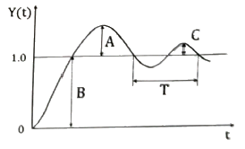
- A/B
- C/B
- C/A
- C/T
(정답률: 51%)
54.
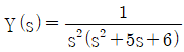
함수의 역 Laplace 변환으로 옳은 것은?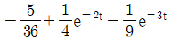
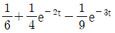
(정답률: 49%)
55. 다음은 열교환기에서의 온도를 제어하기 위한 제어 시스템을 나타낸 것이다. 제어목적을 달성하기 위한 조절변수는?
- 유출물 온도
- 수증기 유량
- 응축수 유량
- 유입물 온도
(정답률: 38%)
56. 다음 중 제어계 설계에서 위상각 여유(phase margin)는 어느 범위일 때 가장 강인(robust)한가?
- 5°~10°
- 10°~20°
- 20°~30°
- 30°~40°
(정답률: 33%)
57. 위상지연이 180°인 주파수는?
- 고유 주파수
- 공명(resonant) 주파수
- 구석(corner) 주파수
- 교차(crossover) 주파수
(정답률: 47%)
58. 어떤 계의 unit impulse 응답이 e-2t 였다. 이 계의 전달함수(transfer function)는?
(정답률: 54%)
59. 비례제어기의 비례제어 상수를 선형계가 안정되도록 결정하기 위해 비례제어 상수를 0으로 놓고 특성방정식을 푼 결과 서로 다른 세 개의 음수의 실근이 구해졌다. 비례제어 상수를 점점 크게 할 때 나타나는 현상을 옳게 설명한 것은?
- 특성방정식은 비례제어 상수아 관계없으므로 세 개의 실근값은 변화가 없으며 계는 계속 안정하다.
- 비례제어 상수가 커짐에 따라 세 개의 실근값 중 하나는 양수의 실근으로 가게되므로 계가 불안정해진다.
- 비례제어 상수가 커짐에 따라 세 개의 실근값 중 두 개는 음수의 실수값을 갖는 켤레 복소수 근으로 갖게 되므로 계의 안정성은 유지된다.
- 비례제어 상수가 커짐에 따라 세 개의 실근값 중 두 개는 양수의 실수값을 갖는 켤레 볷수 근으로 갖게 되므로 계가 불안정해진다.
(정답률: 25%)
60. PID 제어기의 비례 및 적분동작에 의한 제어기 출력 특성 중 옳은 것은?
- 비례동작은 오차가 일정하게 유지될 때 출력값은 0 이 된다.
- 적분동작은 오차가 일정하게 유지될 때 출력값이 일정하게 유지된다.
- 비례동작은 오차가 없어지면 출력값이 일정하게 유지된다.
- 적분동작은 오차가 없어지면 출력값이 일정하게 유지된다.
(정답률: 32%)
4과목: 공업화학
61. 다음 중 1차 전지가 아닌 것은?
- 수은 전지
- 알칼리망간 전지
- Leclanche 전지
- 니켈 카드뮴 전지
(정답률: 50%)
62. 암모니아 소다법에서 암모니아와 함께 생성되는 부산물에 해당하는 것은?
- H2SO4
- NaCl
- NH4Cl
- CaCl2
(정답률: 35%)
63. Nylon 6의 원료 중 caprolactam의 화학식에 해당하는 것은?
- C6H11NO2
- C6H11NO
- C6H7NO
- C6H7NO2
(정답률: 32%)
64. 수용액 상태에서 산성을 나타내는 것은?
- 페놀
- 아닐린
- 수산화칼슘
- 암모니아
(정답률: 52%)
65. 일반적인 성질이 열경화성 수지에 해당하지 않는 것은?
- 페놀수지
- 폴리우레탄
- 요소수지
- 폴리프로필렌
(정답률: 49%)
66. 방향족 아민에 1당량의 황산을 가했을 때의 생성물에 해당하는 것은?
(정답률: 50%)
67. 솔베이법과 염안소다법을 이용한 소다회 제조과정에 대한 비교 설명 중 틀린 것은?
- 솔베이법의 나트륨 이용률은 염안소다법보다 높다.
- 솔베이법이 염안소다법에 비하여 암모니아 사용량이 적다.
- 솔베이법의 경우 CO2를 얻기 위하여 석회석 소성을 필요로 한다.
- 염안소다법의 경우 원료인 NaCl을 정제한 고체 상태로 반응계에 도입한다.
(정답률: 38%)
68. Aramid섬유의 한 종류인 Kevlar 섬유의 제조에 필요한 단량체는?
- terephthaloyl chloride + 1,4-phenylene-diamine
- isophthaloyl chloride + 1,4-phenylene-diamine
- terephthaloyl chloride + 1,3-phenylene-diamine
- isophthaloyl chloride + 1,3-phenylene-diamine
(정답률: 44%)
69. 탄화수소의 분해에 대한 설명 중 틀린 것은?
- 열분해는 자유라디칼에 의한 연쇄반응이다.
- 열분해는 접촉분해에 비해 방향족과 이소파라핀이 많이 생성된다.
- 접촉분해에서는 촉매를 사용하여 열분해보다 낮은 온도에서 분해시킬 수 있다.
- 접촉분해에서는 방향족이 올레핀보다 반응성이 낮다.
(정답률: 43%)
70. 에틸렌과 프로필렌을 공이량화(co-dimerization)시킨 후 탈수소시켰을 때 생성되는 주물질은?
- 이소프렌
- 클로로프렌
- n-펜탄
- n-헥센
(정답률: 40%)
71. 접촉식 황산 제조법에 사용하는 바나듐촉매의 특성이 아닌 것은?
- 촉매 수명이 길다.
- 촉매독 작용이 적다.
- 전화율이 상당히 낮다.
- 가격이 비교적 저렴하다.
(정답률: 51%)
72. 아세틸렌법으로 염화비닐을 생성할 때 아세틸렌과 반응하는 물질로 옳은 것은?
- HCl
- NaCl
- H2SO4
- HOCl
(정답률: 56%)
73. 수분 14wt%, NH4HCO3 3.5wt%가 포함된 NaHCO3 케이크 1000kg에서 NaHCO3가 단독으로 열분해되어 생기는 물의 질량(kg)은? (단, NaHCO3의 열분해는 100% 진행된다.)
- 68.65
- 88.39
- 98.46
- 108.25
(정답률: 38%)
74. 석유화학공업에서 분해에 의해 에틸렌 및 프로필렌 등의 제조의 주된 공업원료로 이용되고 있는 것은?
- 경유
- 나프타
- 등유
- 중유
(정답률: 56%)
75. SO2가 SO3로 산화될 때의 반응열(△H; kcal/mol)은? (단, SO2의 △Hf : -70.96 kcal/mol, SO3의 △Hf : -94.45 kcal/mol 이다.)
- 165
- 24
- -165
- -23
(정답률: 54%)
76. 암모니아의 합성용 수성가스 제조 시 blow 반응에 해당하는 것은?
- C + H2O ⇄ CO + H2 - 29400 cal
- C + 2H2O ⇄ CO2 + 2H2 - 19000 cal
- C + O2 ⇄ CO2 + 96630 cal
- 1/2O2 ⇄ O + 67410 cal
(정답률: 37%)
77. 반도체 공정에 대한 설명 중 틀린 것은?
- 감광반응되지 않은 부분을 제거하는 공정을 에칭이라 하며, 건식과 습식으로 구분할 수 있다.
- 감광성 고분자를 이용하여 실리콘웨이퍼에 회로패턴을 전사하는 공정을 리소그래피(lithography) 라고 한다.
- 화학기상증착법 등을 이용하여 3족 또는 6족의 불순물을 실리콘웨이퍼내로 도입하는 공정을 이온주입이라 한다.
- 웨이퍼 처리공정 중 잔류물과 오염물을 제거하는 공정을 세정이라 하며, 건식과 습식으로 구분할 수 잇다.
(정답률: 54%)
78. 35wt% HCl 용액 1000kg에서 HCl의 물질량(kmol)은?
- 6.59
- 7.59
- 8.59
- 9.59
(정답률: 57%)
79. 복합비료에 대한 설명으로 틀린 것은?
- 비료 3요소 중 2종 이상을 하나의 화합물 상태로 함유하도록 만든 비료를 화성비료라 한다.
- 화성비료는 비효성분의 총량에 따라서 저농도화성비료와 고농도화성비료로 구분할 수 있다.
- 배합비료는 주로 산성과 염기성의 혼합을 사용하는 것이 좋다.
- 질소, 인산 또는 칼륨을 포함하는 단일비료를 2종 이상 혼합하여 2성분 이상의 비료요소를 조정해서 만든 비료를 배합비료라 한다.
(정답률: 46%)
80. Witt 의 발색단설에 의한 분류에서 조색단 기능성기로 옳은 것은?
- -N=N-
- -NO2
- -SO3H
(정답률: 31%)
5과목: 반응공학
81. 촉매반응의 경우 촉매의 역할을 잘 설명한 것은?
- 평형상수(K)를 높여준다.
- 평셩상수(K)를 낮추어 준다.
- 활성화 에너지(E)를 높여준다.
- 활성화 에너지(E)를 낮추어준다.
(정답률: 54%)
82. A와 B를 공급물로 하는 아래 반응에서 R이 목적생성물일 때, 목적생성물의 선택도를 높일 수 방법은?
- A에 B를 한 방울씩 넣는다.
- B에 A를 한 방울씩 넣는다.
- A와 B를 동시에 넣는다.
- A와 B의 농도를 낮게 유지한다.
(정답률: 43%)
83. HBr의 생성반응 속도식이 다음과 같을 때 k2의 단위에 대한 설명으로 옳은 것은?
- 단위는 [m3·s/mol] 이다.
- 단위는 [mol/m3·s] 이다.
- 단위는 [(mol/m3)-0.5(s)-1] 이다.
- 단위는 무차원(dimensionless) 이다.
(정답률: 52%)
84. 균일계 액상반응(A→R)이 회분식반응기에서 1차반응으로 진행된다. A의 40%가 반응하는데 5분이 걸린다면, A의 60%가 반응하는데 걸리는 시간(min)은?
- 5
- 9
- 12
- 15
(정답률: 53%)
85. 균일촉매 반응이 다음과 같이 진행될 때 평형상수와 반응속도상수의 관계식으로 옳은 것은?
(정답률: 41%)
86. 공간시간과 평균체류 시간에 대한 설명 중 틀린 것은?
- 밀도가 일정한 반응계에서는 공간시간과 평균체류 시간은 항상 같다.
- 부피가 팽창하는 기체 반응의 경우 평균체류 시간은 공간시간보다 작다.
- 반응물의 부피가 전화율과 직선 관계로 변하는 관형반응기에서 평균체류 시간은 반응속도와 무관하다.
- 공간시간과 공간속도의 곱은 항상 1 이다.
(정답률: 42%)
87. 어떤 반응의 전화율과 반응속도가 아래의 표와 같다. 혼합흐름반응기(CSTR)와 플러그흐름반응기(PFR)를 직렬연결하여 CSTR에서 전환율을 40%까지, PFR에서 60%까지 반응시키려 할 때, 각 반응기의 부피 합(L)은? (단, 유입 몰유량은 15 mol/s 이다.)
- 1066
- 1996
- 2148
- 2442
(정답률: 30%)
88. A+R → R+R 인 자동촉매 반응이 회분식반응기에서 일어날 때 반응속도가 가장 빠를 때는? (단, 초기 반응기내에는 A가 대부분이고 소량의 R이 존재한다.)
- 반응초기
- 반응말기
- A와 R의 농도가 서로 같을 때
- A의 농도가 R의 농도의 2배 일 때
(정답률: 47%)
89. 플러그흐름반응기에서 아래와 같은 반응이 진행될 때, 빗금 친 부분이 의미하는 것은? (단, ø는 반응 A→R에 대한 R의 순간수율(instantaneous fractional yield)이다.)
- 총괄수율
- 반응해서 없어진 반응물의 몰수
- 생성되는 R의 최종농도
- 그 순간의 반응물의 농도
(정답률: 49%)
90. 1차 기본반응의 속도상수가 1.5×10-3s-1 일 때, 이 반응의 반감기(s)는?
- 162
- 262
- 362
- 462
(정답률: 54%)
91. Arrhenius law에 따라 작도한 다음 그림 중에서 평행반응(parallel reaction)에 가장 가까운 그림은?
(정답률: 39%)
92. 균일 반응(A+1.5B → P)의 반응속도관계로 옳은 것은?
(정답률: 50%)
93. 다음과 같은 기초반응이 동시에 진행될 때 R의 생성에 가장 유리한 반응조건은?
- A와 B의 농도를 높인다.
- A와 B의 농도를 낮춘다.
- A의 농도는 높이고 B의 농도는 낮춘다.
- A의 농도는 낮추고 B의 농도는 높인다.
(정답률: 49%)
94. 불균일 촉매반응에서 확산이 반응율속 영역에 있는지를 알기 위한 식과 가장 거리가 먼 것은?
- Thiele modulus
- Weisz-Prater 식
- Mears 식
- Langmuir-Hishelwood 식
(정답률: 37%)
95. A→R 액상반응이 부피가 0.1L인 플러그 흐름 반응기에서 –rA = 50CA2 mol/L·min로 일어난다. A의 초기농도는 0.1 mol/L 이고 공급속도가 0.⑤ L/min 일 때 전화율은?
- 0.509
- 0.609
- 0.809
- 0.909
(정답률: 47%)
96. A→R→S로 진행하는 연속 1차 반응에서 각 농도별 시간의 곡선을 옳게 나타낸 것은? (단, CA, CR, CS는 각각 A, R, S의 농도이다.)
- ㉮ - CS, ㉯ - CR, ㉰ - CA
- ㉮ - CS, ㉯ - CA, ㉰ - CR
- ㉮ - CR , ㉯ - CA, ㉰ - CS
- ㉮ - CA, ㉯ - CR, ㉰ - CS
(정답률: 58%)
97. 균일계 병렬 반응이 다음과 같을 때 R을 최대로 얻을 수 있는 반응 방식은?
(정답률: 56%)
98. 아래와 같은 경쟁반응에서 R을 더 많이 생기게 하기 위한 조건으로 적절한 것은? (단, 농도 그래프의 R과 S의 농도는 경향을 의미하며 E1은 1번 반응의 활성화에너지, E2는 2번 반응의 활성화에너지이다.)
- E1 ＞ E2 이면 저온조작
- E1 ＞ E2 이면 고온조작
- E1 = E2 이면 저온조작
- E1 = E2 이면 고온조작
(정답률: 53%)
99. 반감기가 50시간인 방사능액체를 10L/h의 속도를 유지하며 직렬로 연결된 두 개의 혼합탱크(각 4000L)에 통과시켜 처리할 때 감소되는 방사능의 비율(%)은? (단, 방사능붕괴는 1차반응으로 가정한다.)
- 93.67
- 95.67
- 97.67
- 99.67
(정답률: 31%)
100. A→R 액상 기초반응을 부피가 2.5L 인 혼합흐름반응기 2개를 직렬로 연결해 반응시킬 때의 전화율(%)은? (단, 반응상수는 0.253 min-1, 공급물은 순수한 A이며, 공급속도는 400cm3/min 이다.)
- 73%
- 78%
- 80%
- 85%
(정답률: 37%)